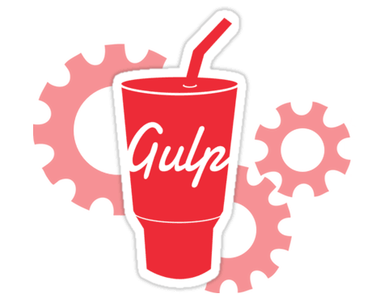

Gulp
Is an open-source JavaScript toolkit used as a streaming build system similar to a more package-focussed Make) in front-end web development.


Sass
(Short for syntactically awesome style sheets) is a preprocessor scripting language that is interpreted or compiled into Cascading Style Sheets (CSS)